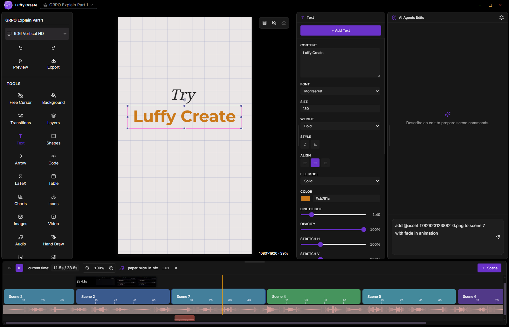

Precise Timeline
Scene blocks, media tracks, audio lanes, markers, transitions, and minute-level timing for real editing precision.
Luffy Create is a free, open-source video editor built for creators who want real control with both online and offline editing, AI-assisted scene edits, automatic captions, Python & Manim animation, and direct MP4 export. No cloud, no account, no watermark.
✦ AI EDIT PLAN
add zoom-in 1.00 → 1.15
✓ caption cue set @ 02.4
MANIM // RENDER
math_scene.mp4 · 00:03.2 done
EXPORT ✓
luffy_v1.mp4 · 1080p · 30fps

A complete editor with timeline precision, AI-assisted edits, captions, media effects, animation tools, and fast export — no subscription, no cloud lock-in.
Scene blocks, media tracks, audio lanes, markers, transitions, and minute-level timing for real editing precision.
Structured prompts that add scenes, text, media, animation, and audio — every change arrives as a reviewable plan.
Generate captions from audio, retune cue timing, style the subtitles, and place them exactly where your video needs them.
Text, gradients, shapes, arrows, icons, hand drawing, images, video, audio, charts, tables, counters, and code blocks.
Generate charts and visuals with Python, render Manim math animations, and insert outputs into a scene in one click.
Crop, blur, color, shadows, animated borders, perspective warp, and full background control for every asset.
Enter, loop, and exit effects with easing, typewriter, bounce, draw-path, flow, scale, and move controls.
Fade, zoom, morph, slide, wipe, and push — designed for subtle scene changes and crisp launch demos.
Render MP4 video and PNG / WebP stills locally with FFmpeg. No upload, no watermark, no account required.
| Features | Luffy Create | Typical editors |
|---|---|---|
| Price | Free & open source | Paid / subscription |
| Works offline | Yes, fully | Usually requires internet |
| Account required | No | Yes |
| Timeline control | Detailed scene & media timing | Often hidden or simplified |
| AI edits | Structured, reviewable commands | Often prompt-only, unpredictable |
| Code & Manim tools | Built in | Rarely |
| Watermark on export | None | Common on free tiers |
| Data & telemetry | None collected | Varies |
| MP4 / PNG / WebP export | Yes, local | Often limited |
Yes. Luffy Create is completely free and open source under the MIT License. There is no subscription, no paywall, and no account required.
Version 1.3 ships builds for Windows, macOS, and Linux. You can also run from source on any platform with Node.js installed.
No. Luffy Create is offline-first. Editing and MP4 export run entirely on your machine — there is no cloud upload and no telemetry.
You can export MP4 video at 720p or 1080p, and still images in PNG or WebP. All rendering is handled locally with FFmpeg.
No. Luffy Create is strong for technical videos, tutorials, launch demos, educational videos, product walkthroughs, and social content that needs precise text, media, audio, captions, and animation control.
The v1 installer is not yet code-signed. Click "More info" then "Run anyway". The full source code is public, so you can review or build it yourself.
No. Luffy Create collects no data and contains no telemetry. Your projects are stored locally on your own computer.
Ten short guides for every part of the editor. Open any of them straight from the public repo.
Download Luffy Create and start building precise videos today — free, open source, and local-first. Prefer source? Build from the repo.
Open the verification link we sent, then return here to download Luffy Create.
Downloads are public GitHub Release files. We record this button click to understand adoption.